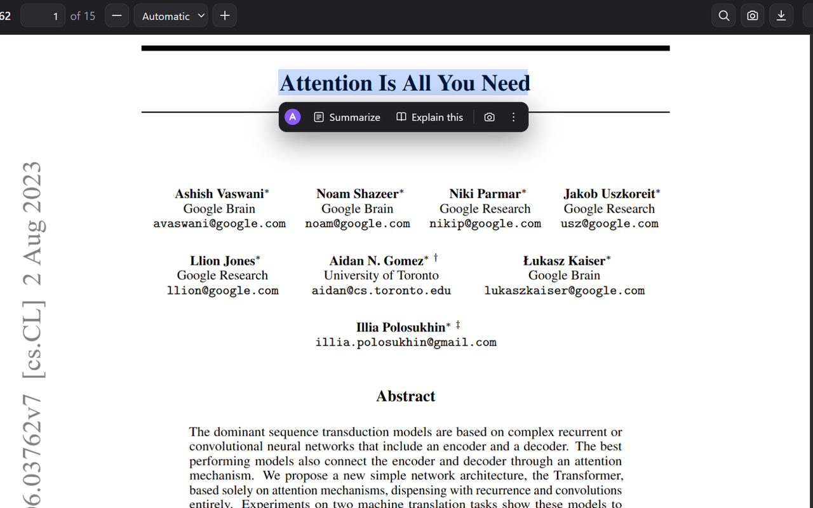
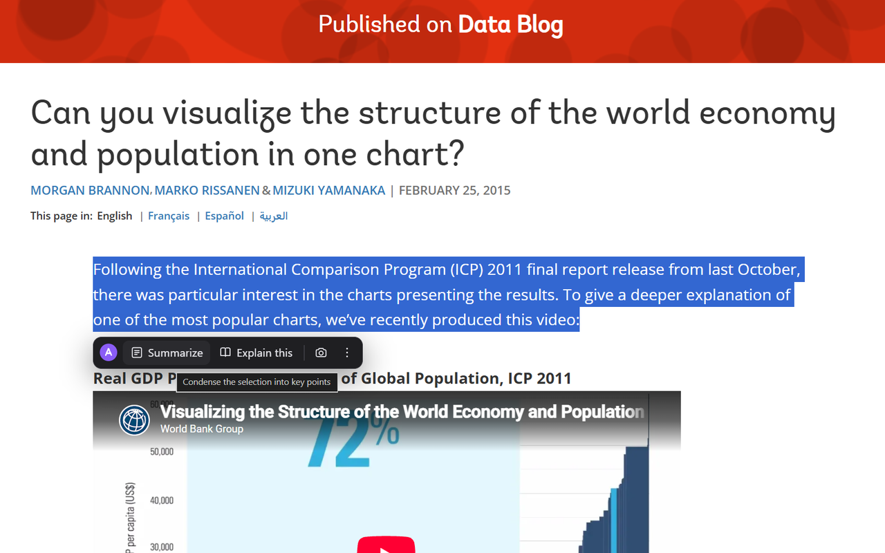
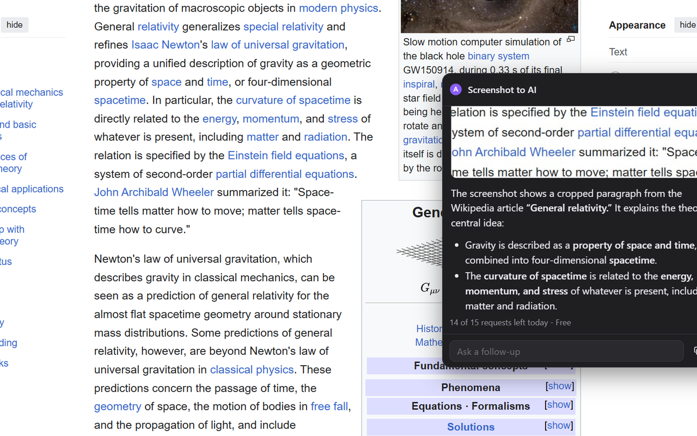
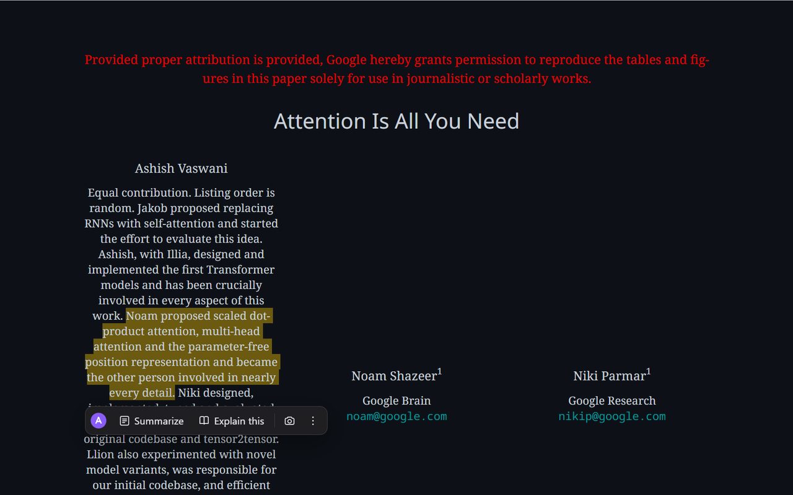
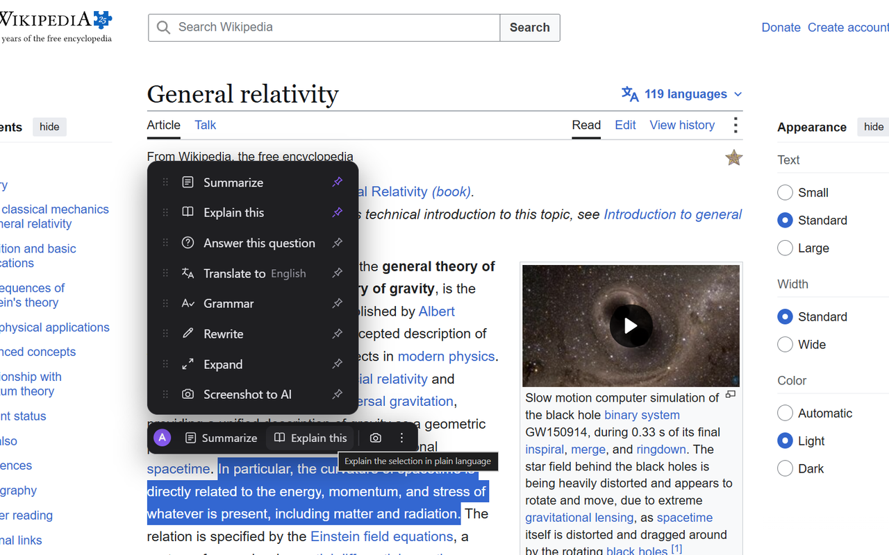

Select text
Highlight a sentence, paragraph, or passage on any webpage or PDF.
For anyone who reads dense material
Select text on any webpage or PDF. Amanda appears beside it with an explanation, summary, translation, rewrite, or answer—without breaking your reading flow.
15 free requests every day · Pro trial starts on install · No account needed

From a dense page to a useful answer without copy-paste, tab-switching, or losing the sentence you started from.
Use the selection bar for the actions you reach for most. Open the full menu when you need more.
Highlight a sentence, paragraph, or passage on any webpage or PDF.
Choose Ask, Summarize, Explain, Translate, Rewrite, or Fix grammar.
Your answer opens next to the original. No new tab and no copy-paste.

Real product views across PDFs, webpages, dark mode, the full action menu, and screenshot-to-AI.



Not another place to move your reading. A small set of tools attached to the exact passage in front of you.
Turn a difficult sentence into plain language while the original stays visible.
Condense a long selection into the points worth carrying forward.
Pose a question about the passage instead of rebuilding its context in a new tab.
Translate selected text in place and continue reading from the same spot.
Reshape wording for clarity, tone, or concision right where you found it.
Clean up grammar in selected writing without moving it to another tool.
Drag over a chart, diagram, or code when selecting text is not enough.
Amanda reads nothing until you select text and choose an action. It does not run in the background.
No account needed to start — the Pro trial begins on install. Register with your email anytime to log in and manage your account across computers.
For trying Amanda in your everyday reading flow.
For readers who use Amanda throughout the day.
On web pages and PDFs in Chrome. Select text to open the action bar, or use Ctrl+Shift+K.
Yes. Use Screenshot to AI, or press Ctrl+Shift+U, then drag over a chart, diagram, code block, or any visual region you want to ask about.
No. Amanda reads nothing until you select text or capture a region and choose an action.
No. Amanda does not store your selected text, screenshots, or answers.
No account needed to start — the Pro trial begins on install. Register with your email anytime to log in and manage your account across computers.
You can keep using the Free plan for up to 15 requests per day, or choose Pro for 500 requests per day at $7.99 monthly or $79.99 yearly.
Read the hard thing where it already lives, with the answer beside it.
Add Amanda to Chrome ↗